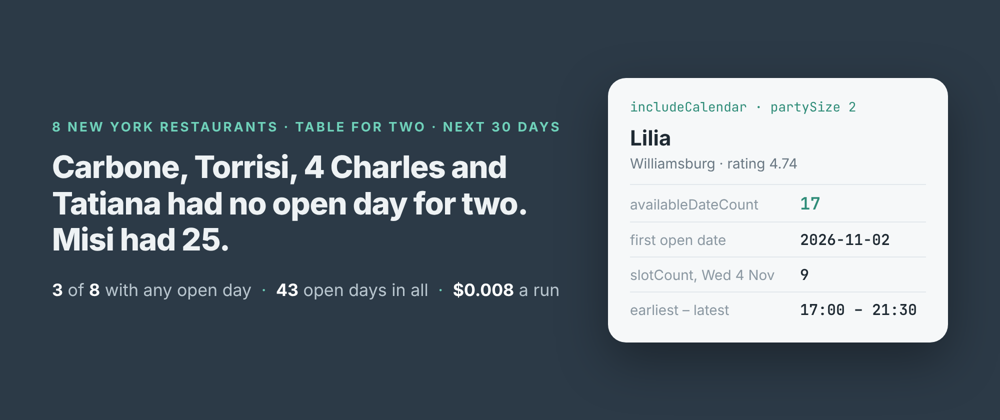
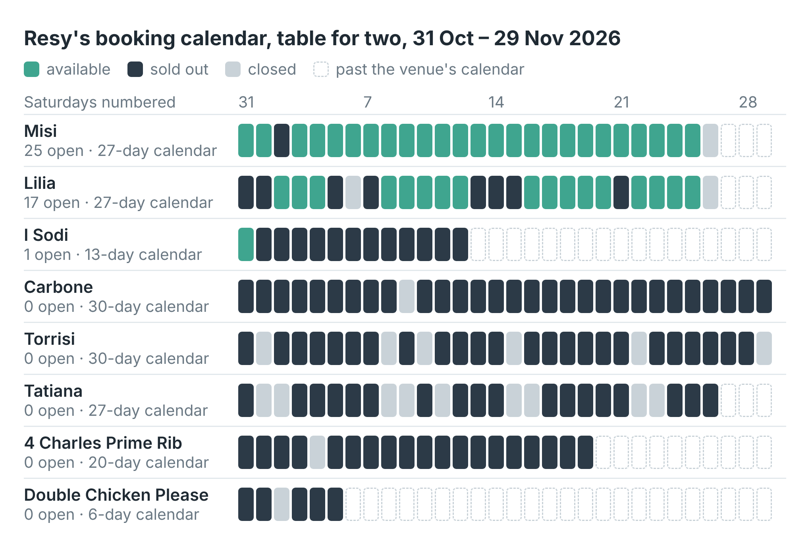
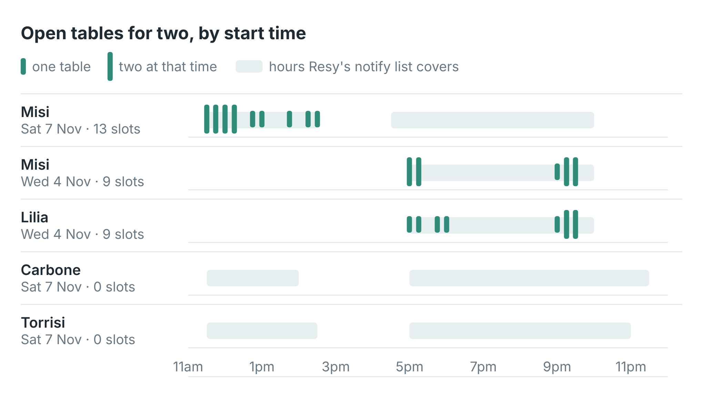

How to get a table at a booked-out New York restaurant on Resy (8 restaurants, 30 days)
I wrote this with an AI assistant. The runs, numbers and code are real, and I checked them.

Carbone had no table for two on any of the next 30 days. Its calendar on Resy showed 29 days sold out and one closed. Torrisi, Tatiana and 4 Charles Prime Rib looked the same. Misi, in Williamsburg, had a table on 25 of its 27 days.
I read those calendars on the morning of 31 October 2026, eight New York restaurants in one run that took 21 seconds and cost 0.8 cents. This post is what they showed, and what "available" turned out to mean once I looked at the actual times.
The run
I build and run a Resy scraper on Apify. Give it Resy venue URLs, switch on includeCalendar, and each restaurant comes back as one row with Resy's day-by-day booking status for your party size: calendar (every day, marked available, sold-out or closed), availableDates and availableDateCount. No Resy account, no login.
import { ApifyClient } from 'apify-client';
const client = new ApifyClient({ token: process.env.APIFY_TOKEN });
const url = 'https://resy.com/cities/new-york-ny/venues/lilia';
const run = await client.actor('simple.actor/resy-availability')
.call({ startUrls: [{ url }], maxItems: 20, partySize: 2,
includeCalendar: true, calendarDays: 30 });
const { items } = await client
.dataset(run.defaultDatasetId).listItems();
for (const v of items) console.log(v.name, v.availableDates);
I gave it twelve URLs. Eight came back. Across those eight, 43 days had a table for two. Three restaurants held all 43.

Each square is a day in the restaurant'scalendar field. Dashed squares are days past the end of the calendar Resy returned.
Lilia had 17 open days and Misi 25. Both belong to the same group, which Resy names in venueGroup. I Sodi had one: that same evening. Carbone, Torrisi and Tatiana had none. Neither did 4 Charles Prime Rib, whose calendar stopped at 19 November, 20 days out, or Double Chicken Please, whose calendar was six days long.
That length is worth reading on its own. I asked for 30 days at every restaurant, and Resy returned 30 for Carbone and Torrisi, 27 for Lilia, Misi and Tatiana, 20 for 4 Charles, 13 for I Sodi and 6 for Double Chicken Please. A day past the end of a restaurant's calendar isn't sold out; Resy just doesn't show it.
"Available" is not 8pm
The calendar said Misi was available on Saturday 7 November. So I ran the scraper again with includeAvailability, that date and a party of two, to get the actual tables. Misi had 13. Every one of them was lunch, between 11:30 and 14:30. Nothing for dinner.
Wednesday 4 November looked better on the calendar for both Lilia and Misi. Each had 9 tables. Lilia's ran from 17:00 to 18:00 and then from 21:00 to 21:30, on the patio and at the bar. Misi's were at 17:00 and 17:15, then 21:00 to 21:30. Neither had a table between 6pm and 9pm.

Each mark is one row inslots, from the startTime field. The grey bands are notifyWindows.
So a calendar day marked available means at least one table, at some hour, in some part of the room. If you want 8pm, read the slots for the day you care about. Each slot carries its startTime, its type (Dining Room, Bar, Patio, Kitchen Counter) and turnTimeSeconds. At Lilia each table was held for two hours, 7,200 seconds. None of the 31 slots I read needed a deposit.
The table that opened while I watched
Five minutes after the first calendar run, I tested the example script on Lilia, I Sodi, Carbone and Torrisi. Lilia now had 18 open days, not 17. That evening, 31 October, had gone from sold-out to available. Somebody had cancelled.
That's the real use for a booked-out restaurant: run the same check every few minutes and look for a day that changes. Each run of this check costs a tenth of a cent a restaurant. When nothing is open, Resy also says whether it will take you on its notify list: notifyAvailable was true at 7 of the 8 restaurants for the Saturday, with the hours it covers in notifyWindows. Double Chicken Please, whose calendar didn't reach that Saturday, offered none.
Two things I got wrong first
My first run returned two restaurants out of twelve. maxItems defaults to 3, and it caps the URL list too, not only search results. One of the first three URLs didn't answer, so I got two rows. Set maxItems to at least the number of URLs you give it.
Four of my URLs left no row at all. Don Angie, Rezdora, Ci Siamo and Le B. Resy answers "not found" for those addresses, and the scraper treats that as "not on Resy" and writes nothing. I searched Resy for each name with the scraper's search mode, and it returned other restaurants: Don Don and Don Ceviche, Fedora and Rhodora. So either my addresses were wrong or those places don't take bookings on Resy. The scraper can't tell the two apart, so check that every URL you give it brings back a row. The example scripts print the ones that didn't.
What it cost
The scraper charges $0.001 for each restaurant row it returns, $1.00 per 1,000, or $0.98 per 1,000 on Apify's Business plan and up. A URL that leaves no row costs nothing. The 30-day calendar for eight restaurants was 8 rows, $0.008. The Saturday check was another $0.008: I asked it to keep restaurants with no tables (keepUnavailable), so all eight came back and all eight were charged. Everything behind this post, the mistakes and the searches included, was 35 rows: $0.035.
Where it runs out
Thirty days at most. For Carbone and Torrisi I asked for a calendar to 31 December. I got the same 30 days, to 29 November, and then only 25 December, marked not available. A run asking for December alone returned that one day. Whatever Resy holds beyond its window, it doesn't show it.
The calendar is per party size. Every number here is for two. A table for four is a different question; set partySize and run it again.
It reads availability, it doesn't book. Each slot comes with Resy's booking token, but booking is Resy's app and your account. The scraper tells you which day to open it on.
A day can change between runs. Lilia's evening opened up inside five minutes. Every row has a scrapedAt time, and a calendar is only true at that moment.
Making it yours
Swap in the Resy URLs of the places you've been trying to get into, in your city, set partySize to the size of your group, and run it on a schedule. Keep each run's availableDates and compare with the last one. A new date is a cancellation. If you only care about dinner, follow up the new dates with includeAvailability and keep the slots after 7pm.
The full script, in Node and Python, prints each restaurant's open days and writes every day of every calendar to a CSV. It's in the example repo on GitHub. The scraper is Resy Scraper on Apify.